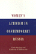
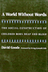

Browse
other Titles:
A B C
D E F
G H I
J K L
M N O
P Q R
S T U
V W X
Y Z |
 |
Waiting
on Washington
Central American Workers in the Nation's Capital
Repak,
Terry A.
272 pp • 5.5x8.25 • Spring 1995
paper 978-1-56639-302-7
cloth 978-1-56639-301-0 |
 |
Walk
the Walk and Talk the Talk
An Ethnography of a Drug Abuse Treatment Facility
Skoll,
Geoffrey R.
224 pp • 5.5x8.25 • Spring 1992
cloth 978-0-87722-917-9 |
 |
Walking in Cities
Quotidian Mobility as Urban Theory, Method, and Practice
edited by Brown, Evrick and Timothy Shortell
292 pp • 6x9 • Fall 2015
paper 978-1-4399-1221-8
cloth 978-1-4399-1220-1 |
 |
The War on Slums in the Southwest
Public Housing and Slum Clearance in Texas, Arizona, and New Mexico, 1935-1965
Fairbanks, Robert B.
New in Paperback!
252 pp • 6x9 • Spring 2014
paper 978-1-4399-1116-7
cloth 978-1-4399-1115-0 |

|
The Wars We Inherit
Military Life, Gender Violence, and Memory
Amy, Lori E.
216 pp • 5.5x8.25 • Spring 2010
paper 978-1-59213-961-3
cloth 978-1-59213-960-6
|
 |
Wash
and Be Healed
The Water-Cure Movement and Women's Health
Cayleff,
Susan E.
257 pp • Spring 1987
paper 978-0-87722-859-2
cloth 978-0-87722-462-4
|
 |
Washington,
D.C.
Inner-City Revitalization and Minority Suburbanization
Gale,
Dennis E.
259 pp • Fall 1987
paper 978-0-87722-777-9
cloth 978-0-87722-496-9 |
|
We
Are a People
Narrative and Multiplicity in Constructing Ethnic Identity
edited
by Spickard, Paul and W. Jeffrey Burroughs
304 pp • 7x10 • Fall 1999
paper 978-1-56639-723-0
cloth 978-1-56639-722-3
|
 |
We
Can't Eat Prestige
The Women Who Organized Harvard
Hoerr,
John
280 pp • 6x9 • Spring 1997
paper 978-1-56639-925-8
cloth 978-1-56639-535-9
|

|
We Decide!
Theories and Cases in Participatory Democracy
Menser, Michael
360 pp • 6x9 • Fall 2017
paper 978-1-4399-1418-2
cloth 978-1-4399-1417-5
|
 |
"We Live in the Shadow"
Inner-City KidsTell Their Stories through Photographs
Kaplan, Elaine Bell
208 pp • 6x9 • Spring 2013
paper 978-1-43990-790-0
cloth 978-1-43990-789-4
|
|
We
Make the Road by Walking
Conversations on Education and Social Change
Horton,
Myles and Paulo Freire, edited by Brenda Bell, John Gaventa
and John Peters
296 pp • 5.5x8.25 • Fall 1990
paper 978-0-87722-775-5
cloth 978-0-87722-771-7
|

|
We Shall Be Free!
Black Communist Protests in Seven Voices
Howard, Walter T.
220 pp • 5.5x8.25 • Spring 2013
cloth 978-1-4399-0859-4 |
|
We Shall Not Be Moved/No nos moverán
Biography of a Song of Struggle
Spener, David
208 pp • 5.5x8.25 • Spring 2016
paper 978-1-4399-1298-0
cloth 978-1-4399-1297-3
|
 |
We
the People
Young,
Alfred F. and Terry J. Fife with Mary E. Janzen
265 pp • 10x8 • Fall 1992
paper 978-0-87722-938-4
cloth 978-0-87722-937-7 |
 |
Weaving
Work and Motherhood
Garey,
Anita Ilta
240 pp • 6x9 • Spring 1999
paper 978-1-56639-700-1
cloth 978-1-56639-699-8
|
 |
Welfare
Discipline
Discourse, Governance, and Globalization
Schram,
Sanford
208 pp • 6x9 • Fall 2005
paper 978-1-59213-302-4
cloth 978-1-59213-301-7 |
 |
West
African Pop Roots
Collins,
John
382 pp • 6x9 • Spring 1992
paper 978-0-87722-916-2
cloth 978-0-87722-793-9 |
 |
Wheelchair Warrior
Gangs, Disability, and Basketball
Juette, Melvin and Ronald J. Berger
192 pp • 5.5x8.25 • Spring 2008
paper 978-1-59213-475-5
cloth 978-1-59213-474-8
|
 |
Where Rivers Meet the Sea
The Political Ecology of Water
Kane,
Stephanie C.
246 pp • 6x9 • Fall 2012
paper 978-1-4399-0931-7
cloth 978-1-4399-0930-0
|
 |
Whisper Not
The Autobiography of Benny Golson
Golson, Benny and Jim Merod
352 pp • 6x9 • Spring 2016
cloth 978-1-4399-1333-8
|
|
White
Boy
A Memoir
Naison,
Mark D.
240 pp • 6x9 • Spring 2002
paper 978-1-56639-942-5
cloth 978-1-56639-941-8
|
 |
The White Savior Film
Content, Critics, and Consumption
Hughey, Matthew W.
230 pp • 6x9 • Spring 2014
paper 978-1-4399-1001-6
cloth 978-1-4399-1000-9 |
 |
The
White Sox Encyclopedia
Lindberg,
Richard C., photographs by Mark Fletcher
592 pp • 9x12 • Spring 1997
cloth 978-1-56639-449-9 |
 |
The
Whiz Kids and the 1950 Pennant
Roberts,
Robin and C. Paul Rogers, III, foreword by Pat Williams
390 pp • 6x9 • Spring 1996
paper 978-1-56639-790-2
cloth 978-1-56639-466-6
|
 |
Who
Cares for the Elderly?
Public Policy and the Experiences of Adult Daughters
Abel,
Emily K.
248 pp • 6x9 • Spring 1991
paper 978-0-87722-950-6
cloth 978-0-87722-814-1
|
 |
Who
Killed George Polk?
The Press Covers Up a Death in the Family
Vlanton,
Elias with Zak Mettger
352 pp • 6x9 • Fall 1995
cloth 978-1-56639-367-6 |
 |
Who
Knows
From Quine to a Feminist Empiricism
Nelson,
Lynn Hankinson
336 pp • 6x9 • Fall 1989
paper 978-1-56639-007-1
cloth 978-0-87722-647-5 |
 |
Whose National Music?
Identity, Mestizaje, and Migration in Ecuador
Wong, Ketty
268 pp • 6x9 • Spring 2012
cloth 978-1-4399-0057-4 |
 |
Why
I Burned My Book and Other Essays on Disability
Longmore,
Paul K.
288 pp • 6x9 • Spring 2003
paper 978-1-59213-024-5
cloth 978-1-59213-023-8
|

|
Why Our Drug Laws Have Failed and What We Can Do About It
A Judicial Indictment of the War on Drugs
Second Edition
Gray, James P.
304 pp • 6x9 • Fall 2011
paper 978-1-4399-0799-3
cloth 978-1-4399-0798-6
|
|
Why Veterans Run
Military Service in American Presidential Elections, 1789-2016
Teigen, Jeremy M.
320 pp • 6x9 • Fall 2017
paper 978-1-4399-1436-6
cloth 978-1-4399-1435-9
|
|
Why
Women are Oppressed
Jónasdóttir,
Anne G., foreword by Kathleen B. Jones
312 pp • 6x9 • Fall 1993
paper 978-1-56639-111-5
cloth 978-1-56639-110-8
|
 |
The
Wild Animal Story
edited
by Lutts, Ralph H.
328 pp • 6x9 • Spring 1998
paper 978-1-56639-918-0
cloth 978-1-56639-593-9
|
 |
Will Big League Baseball Survive?
Globalization, the End of Television, Youth Sports, and the Future of Major League Baseball
Mitchell,
Lincoln A.
234 pp • 5.5x8.25 • Fall 2016
paper 978-1-4399-1379-6
cloth 978-1-4399-1378-9
|
|
William
Henry Jackson and the Transformation of the American Landscape
Hales,
Peter B.
368 pp • 11x8.5 • Spring 1988
paper 978-1-56639-463-5
cloth 978-0-87722-478-5 |
 |
William
James and the Reinstatement of the Vague
Gavin,
William Joseph
240 pp • 5.5x8.25 • Fall 1992
cloth 978-0-87722-946-9 |
 |
Winningest
Pitchers
Baseball's 300-Game Winners
Westcott,
Rich
216 pp • 5.5x8.25 • Spring 2002
paper 978-1-56639-949-4
|
|
The
Woman I Was Not Born To Be
A Transsexual Journey
Brevard,
Aleshia
272 pp • 6x9 • Fall 2000
paper 978-1-56639-840-4
cloth 978-1-56639-839-8
|
|
A
Woman's Ministry
Tucker,
Cynthia Grant
Fall 1984
cloth 978-0-87722-338-2 |
 |
Woman's
Place Is at the Typewriter
Office Work and Office Workers, 1870-1930
Davies,
Margery W.
256 pp • Fall 1982
paper 978-0-87722-368-9
cloth 978-0-87722-291-0 |
 |
Women
and Film
A Sight and Sound Reader
edited
by Cook, Pam and Philip Dodd
287 pp • 5.5x8.25 • Fall 1993
paper 978-1-56639-143-6
cloth 978-1-56639-142-9
|
 |
Women
and Gender
A Feminist Psychology
Unger,
Rhoda and Mary Crawford
549 pp • Fall 1991
cloth 978-0-87722-897-4 |
 |
Women
and Stepfamilies
Voices of Anger and Love
edited
by Maglin, Nan Bauer and Nancy Schniedewind
448 pp • Fall 1988
paper 978-0-87722-782-3
cloth 978-0-87722-586-7 |
 |
Women
and the Politics of Empowerment
edited
by Bookman, Ann and Sandra Morgen
352 pp • Fall 1987
paper 978-0-87722-525-6
cloth 978-0-87722-504-1
|
|
Women
and Trade Unions in Eleven Industrialized Countries
edited
by Cook, Alice H., Val R. Lorwin and Arlene Kaplan Daniels
360 pp • Fall 1983
cloth 978-0-87722-319-1 |
 |
Women
Between Two Worlds
Midlife Reflections on Work and Family
Dinnerstein,
Myra
210 pp • Fall 1992
paper 978-0-87722-885-1
cloth 978-0-87722-884-4
|
 |
Women
in 1900
Gateway to the Political Economy of the 20th Century
Bose,
Christine E.
272 pp • 5x8 • Fall 2000
paper 978-1-56639-838-1
cloth 978-1-56639-837-4
|
 |
Women in Politics in the American City
Holman, Mirya R.
212 pp • 5.5x8.25 • Fall 2014
cloth 978-1-43991-170-9 |
 |
Women
in the Latin American Development Process
edited
by Bose, Christine E. and Edna Acosta-Belén
304 pp • 6x9 • Spring 1995
paper 978-1-56639-293-8
cloth 978-1-56639-292-1
|
|
Women
in the Sanctuary Movement
Lorentzen,
Robin
240 pp • Spring 1991
cloth 978-0-87722-768-7 |
|
Women
Living Change
Bourque,
Susan C. and Donna Robinson Divine
288 pp • Spring 1985
cloth 978-0-87722-369-6 |
 |
Women
Living with Self-Injury
Hyman,
Jane Wegscheider
248 pp • 6x9 • Fall 1999
paper 978-1-56639-721-6
cloth 978-1-56639-720-9
|
 |
Women
of Color in U.S. Society
edited
by Zinn, Maxine Baca and Bonnie Thornton Dill
360 pp • 6x9 • Fall 1993
paper 978-1-56639-106-1
cloth 978-1-56639-105-4
|
 |
Women
of Japan and Korea
Continuity and Change
edited
by Gelb, Joyce and Marian Lief Palley
320 pp • 6x9 • Fall 1994
paper 978-1-56639-224-2
cloth 978-1-56639-223-5
|
 |
Women
of the New Right
Klatch,
Rebecca E.
264 pp • Spring 1987
paper 978-0-87722-590-4
cloth 978-0-87722-470-9 |
 |
Women
of the Upper Class
Ostrander,
Susan A.
Spring 1984
paper 978-0-87722-475-4
cloth 978-0-87722-334-4
|
 |
Women
Reading Women Writing
Self-Invention in Paula Gunn Allen, Gloria Anzaldúa, and Audre
Lorde
Keating,
AnaLouise
256 pp • 5.2x8.25 • Spring 1996
paper 978-1-56639-420-8
cloth 978-1-56639-419-2
|
 |
Women
Reformed, Women Empowered
Poor Mothers and the Endangered Promise of Head Start
Ames,
Lynda J. with Jeanne Ellsworth
264 pp • 5.5x8.25 • Fall 1996
paper 978-1-56639-493-2
cloth 978-1-56639-492-5 |
 |
Women
Resisting AIDS
Feminist Strategies of Empowerment
edited
by Schneider, Beth E. and Nancy E. Stoller
352 pp • 6x9 • Fall 1994
paper 978-1-56639-269-3
cloth 978-1-56639-268-6 |
 |
Women
with Disabilities
Essays in Psychology, Culture, and Politics
edited
by Fine, Michelle and Adrienne Asch
347 pp • 6x9 • Fall 1987
paper 978-0-87722-669-7
cloth 978-0-87722-474-7
|

|
Women's Activism and Feminist Agency in Mozambique and Nicaragua
Disney, Jennifer Leigh
New in Paperback!
306 pp • 6x9 • Spring 2010
paper 978-1-59213-829-6
cloth 978-1-59213-828-9
|
|  |
Women's
Activism in Contemporary Russia
Racioppi,
Linda and Katherine O’Sullivan See
277 pp • 5.5x8.25 • Spring 1997
paper 978-1-56639-521-2
cloth 978-1-56639-520-5 |
 |
The
Women's Movements of the United States and Western Europe
Consciousness, Political Opportunity, and Public Policy
edited
by Katzenstein, Mary Fainsod and Carol McClurg Mueller
366 pp • 6x9 • Spring 1987
paper 978-1-56639-012-5
cloth 978-0-87722-463-1 |
 |
Women's
Paid and Unpaid Labor
The Work Transfer in Health Care and Retailing
Glazer,
Nona Y.
360 pp • 6x9 • Fall 1992
paper 978-1-56639-199-3
cloth 978-0-87722-979-7 |
 |
Women's
Political Voice
How Women are Transforming the Practice and Study of Politics
Flammang,
Janet A.
480 pp • 6x9 • Spring 1997
paper 978-1-56639-534-2
cloth 978-1-56639-533-5
|
 |
Women's
Suffrage Movement and Irish Society in the Early Twentieth Century
Murphy,
Cliona
240 pp • Spring 1989
cloth 978-0-87722-636-9 |
 |
Women,
Class, and the Feminist Imagination
A Socialist-Feminist Reader
edited
by Hansen, Karen V. and Ilene J. Philipson
670 pp • Fall 1989
paper 978-0-87722-654-3
cloth 978-0-87722-630-7 |
 |
Women,
Creole Identity, and Intellectual Life in Early Twentieth-Century
Puerto Rico
Roy-Féquière,
Magali
328 pp • 6.875x10 • Fall 2003
paper 978-1-59213-231-7
cloth 978-1-59213-230-0
|
 |
Women,
Employment and Family in the International Division of Labour
edited
by Stichter, Sharon and Jane L. Parpart
288 pp • Spring 1990
cloth 978-0-87722-739-7 |
|
Women,
International Development, and Politics
The Bureaucratic Mire
edited
by Staudt, Kathleen
356 pp • 6x9 • Fall 1989
paper 978-1-56639-546-5
cloth 978-0-87722-658-1
|
 |
Women,
Islam and the State
edited
by Kandiyoti, Deniz
256 pp • Fall 1990
paper 978-0-87722-786-1
cloth 978-0-87722-785-4
|
 |
Work
and Democracy in Socialist Cuba
Fuller,
Linda O.
311 pp • 6x9 • Spring 1992
cloth 978-0-87722-893-6 |
 |
Work
on the Waterfront
Worker Power and Technological Change in a West Coast Port
Finlay,
William
224 pp • 5.5x8.25 • Spring 1988
cloth 978-0-87722-523-2 |
 |
Work
Without End
Abandoning Shorter Hours for the Right to Work
Hunnicutt,
Benjamin Kline
416 pp • Spring 1988
paper 978-0-87722-763-2
cloth 978-0-87722-520-1 |
 |
Work,
Community, and Power
The Experience of Labor in Europe
edited
by Cronin, James E. and Carmen Sirianni
306 pp • Spring 1983
paper 978-0-87722-309-2
cloth 978-0-87722-308-5 |
 |
Work,
Inc.
A Philosophical Inquiry
Byrne,
Edmund F.
360 pp • Spring 1990
paper 978-0-87722-957-5
cloth 978-0-87722-688-8 |
 |
Worker
Participation and the Politics of Reform
edited
by Sirianni, Carmen
384 pp • Spring 1987
cloth 978-0-87722-464-8 |
|
Workers of the World, Enjoy!
Aesthetic Politics from Revolutionary Syndicalism to the Global Justice Movement
Tucker Jr., Kenneth H.
224 pp • 5.5x8.25 • Spring 2010
paper 978-1-59213-765-7
cloth 978-1-59213-764-0
|
 |
Workers'
Struggles, Past and Present
A "Radical America" Reader
edited
by Green, James
437 pp • Spring 1983
paper 978-0-87722-315-3
cloth 978-0-87722-293-4 |
 |
Workforce
Development Politics
Civic Capacity and Performance
edited
by Giloth, Robert P.
296 pp • 6x9 • Fall 2003
paper 978-1-59213-229-4
cloth 978-1-59213-228-7
|
 |
Workforce
Intermediaries for the Twenty-first Century
edited
by Giloth, Robert P.
432 pp • 6x9 • Fall 2003
cloth 978-1-59213-204-1
|
 |
Workin'
It
Women Living Through Drugs and Crime
Pettiway,
Leon E.
304 pp • 6x9 • Fall 1997
paper 978-1-56639-580-9
cloth 978-1-56639-579-3
|
 |
Working
Feminism
Pratt,
Geraldine
224 pp • 234x156mm • Spring 2004
paper 978-1-59213-264-5
cloth 978-1-59213-263-8
|
 |
Working
in the Service Society
edited
by Macdonald, Cameron Lynne and Carmen J. Sirianni
376 pp • 6x9 • Fall 1996
paper 978-1-56639-480-2
cloth 978-1-56639-479-6 |
 |
Working
People of Philadelphia, 1800-1850
Laurie,
Bruce
Spring 1983
paper 978-0-87722-292-7
|
 |
Working
Poor
Farmworkers in the United States
Griffith,
David and Ed Kissam with Jeromino Camposeco, Anna García, Max
Pfeffer, David Runsten, and Manuel Valdes Pizzini
368 pp • 6x9 • Fall 1994
paper 978-1-56639-239-6
cloth 978-1-56639-238-9 |
 |
Working
Time in Transition
The Political Economy of Working Hours in Industrial Nations
edited
by Hinrichs, Karl, William Roche and Carmen Sirianni
352 pp • Spring 1991
cloth 978-0-87722-757-1 |
|
Worktime
and Industrialization
An International History
edited
by Cross, Gary
256 pp • Fall 1988
cloth 978-0-87722-582-9 |
 |
The
World Next Door
South Asian American Literature and the Idea of America
Srikanth,
Rajini
304 pp • 6x9 • Fall 2004
paper 978-1-59213-081-8
cloth 978-1-59213-080-1
|
 |
The
World of Kate Roberts
Selected Stories, 1925-1981
translated
by Clancy, Joseph P.
400 pp • Fall 1991
paper 978-0-87722-795-3
cloth 978-0-87722-794-6 |
|
The
World the Sixties Made
Politics and Culture in Recent America
edited
by Gosse, Van and Richard Moser
352 pp • 6x9 • Fall 2003
paper 978-1-59213-201-0
cloth 978-1-59213-200-3
|
|  |
A
World without Words
The Social Construction of Children Born Deaf and Blind
Goode,
David, foreword by Irving Kenneth Zola
336 pp • 5.5x8.25 • Fall 1994
paper 978-1-56639-216-7
cloth 978-1-56639-215-0
|
 |
Writing
Wrongs
The Work of Wallace Shawn
King,
W. D., foreword by John Lahr
264 pp • 5x9 • Spring 1997
cloth 978-1-56639-517-5 |
|
Wrongful Conviction
International Perspectives on Miscarriages of Justice
Edited by Huff, C. Ronald and Martin Killias
New in Paperback!
326 pp • 6x9 • Spring 2010
paper 978-1-59213-646-9
cloth 978-1-59213-645-2
|